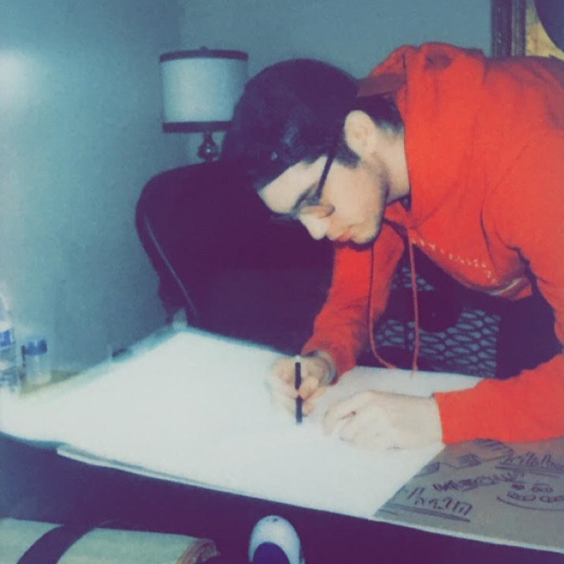

Jonathan Vallecillo

(in progress)
Summary
I am a CAD/BIM drafter/tech working in structural design. My best qualities are efficiency and knowledge of a wide range of programs.
Education
Rocky Mountain College of Art & Design | Lakewood, CO | OCT 2024 (expected)
Bachelor of Fine Arts in Game Art, Design and 3D Modeling Concentration
GPA 3.8/4.0 Summa Cum Laude Honors (expected)
The Art Institutes of Houston | Houston, TX | 2019-2023
Game Art & Design, Major
Work Experience
PGA ENGINEERING | 2022-(current)
- CAD/BIM Drafter/Technician (Stuctural Plan & Detail Design)
- Communicate effectively with architects and engineers through email, coordinating design updates, clarifying project details, and addressing technical questions.
- Conduct field inspections and measurements to verify project conditions, gathering precise data to support design modifications and project documentation.
Freelance Designer | 2018-(current)
Video editing, Motion Design, Graphic Design, Illustration, Game Development, 3D Modeling, Animation.
Skills
- AutoCad
- Revit
- 3dsMax
- Maya
- Substance 3D Paintor
- Substance 3D Designer
- Substance 3D Sampler
- Photoshop
- Illustrator
- ClipStudio
- Permier Pro
- InDesign
- Adobe Animate
- Fusion 360
- Unreal Engine
- Lisp (basics)
- HTML
- C++Blueprints
- CSS
- Javascript
- Python (in progress)
- Aftereffects
- Gdevelop
- SketchUp
- Procreate
- Blender
- ZBrush
- ProPresentor